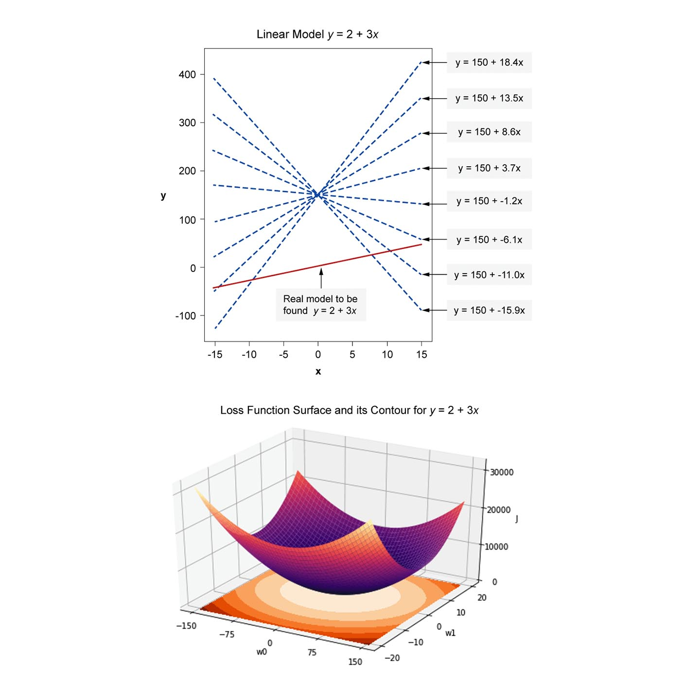

Loss, Objective, Error or Cost Function for Regression
In this section we will develop the concept of a loss function. The discussion applies for any learning method that attempts to minimise a loss function and not only linear regression.
Since we have numerical data, we want to come up with a function (called the loss function, it will become apparent later why we call as such) that is closely linked to the distance between the desired and the actual answers of our regression model. The idea here is that we want to lead the learning process via a minimisation of the loss function so that we minimise the difference between the desired and actual answers. So really, we are talking about an aggregate metric that looks into each data point instead of looking at counting the correctly classified and incorrectly classified cases as we did in the confusion matrix. Later on when we will develop other better classifiers to deal with numerical classification we will actually also use the loss function to lead the learning process (by optimising it) and we are still going to use the confusion matrix to measure the performance of the model after learning has finished. So, the loss function is going to be used in this unit for both the regression and classification to lead the optimisation process (learning) in order to learn a best model fit. When we are talking about multi-component labels (a set of numerical answers instead of one), the loss will be defined on the basis of vector distances, this will become apparent later in this section.
Watch the following video on loss function optimisation.
Download the following powerpoint slides used in the video for a summary of what we cover in this unit.
Loss function for an individual point
The first thing that comes to mind when we try to measure the accuracy of our model’s prediction is to take the difference between (also called the residual or the error) the prediction \(y(x_n )\) and \(t_n\). Let us denote \(y_{n}=y\left(\mathbf{x}_{n}, \mathbf{w}\right)\) where we will use either of \(y_n\) or \(y\left(\mathbf{x}_{n}, \mathbf{w}\right)\) interchangeably depending on what we are trying to emphasise. So, we can define our loss function \(J(x_n )\) which we denote for brevity \(J_n\) as:
Loss function for a Set of Points (Dataset)
So, given that we have plenty of data points in our dataset, it is natural that we would want our model to perform well on all of them. One problem with the above type of individual point loss function \(J_n\) is that it can be either negative or positive and for our prediction both of them are errors. However, the danger is that if we sum negative and positive values for multiple points, they can cancel each other at least partially.
One way to make sure that negative and positive residuals do not cancel is to take the absolute of these residuals \(|J(x_n )|≥0\) and then to sum over all data points to get the sum of absolute errors (SAE): \(|J|=\sum_{n=1}^{N}\left|J_{n}\right|\). The \(\sum_{n=1}^{N}\) means to sum over all \(n=1,…,N\). So if we have \(N=3\) data points in our dataset, then:
One important issue that we will face with such loss function is that it is not differentiable at 0, making dealing with the derivatives for optimisation not straightforward. A better candidate in that sense is the squared error, giving rise to the sum of squared errors \(\left(S S E=\sum_{n=1}^{N} J_{n}^{2}\right)\) loss function that takes the form:
Note that the 2 on top of \(J\) is to indicate that we are summing over the squares and not to indicate a direct squaring operation.
SSE has pros and cons. Its pros are its ease of derivation and positivity. One of its cons is that it exaggerates the residuals, so if a residual is \(-3\), then its squared \((-3)^2\) becomes 9. Nevertheless, SSE is widely used, and its advantages outweigh its disadvantages for many problems. Before we settle on it, we need to make two tweaks to make later developments easy to express.
As we know finding the minimum for \(y^2\) is the same as finding the minimum for \(\frac{1}{2} y^{2}\) but the latter leads to a simpler derivative: \(\frac{d}{d y}\left(\frac{1}{2} y^{2}\right)=y\), while \(\frac{d}{d y}\left(y^{2}\right)=2 y\). Hence, we can use the following loss function (based on SSE) that simplifies taking derivatives:
Furthermore, we can take the Mean of Squared Errors (\(MSE=\frac{1}{N} \sum_{n=1}^{N} J_{n}^{2}\)) to obtain the following loss function:
This loss function has the desired properties of keeping the range of the loss function fixed regardless of the size of the dataset. When we want to differentiate between the loss for training set and for validation set, we write the loss as:
where \(N'\) is the size of the validation set. For the majority of the coverage here we will refer to the loss either as \(\overline{J^{2}}\) or as \(\overline{J^{2}}(\mathbf{w})\). In theory, we can use either \(J^{2}\) or \(\overline{J^{2}}\) in the techniques that we will cover. This is because scaling any function by a fixed constant such as \(\frac{1}{2}\) or \(\frac{1}{2 N}\) will not change the shape of the function and so its stationary (optimal and saddle) points stay the same. For example, if we take the derivatives and we set them to 0 both will yield the same solution. However, \(\overline{J^{2}}\) offers more numerical stability than \(J^{2}\) and there are few cases (particularly when we add a regularisation term to facilitate a stochastic gradient decent algorithm) where starting from \(\overline{J^{2}}\) will make the update term slightly more consistent with other updates.
Below we show an example of a linear model with its loss function, the learning algorithm mission will be to find the parameter settings that minimise the loss function for the given data, i.e. to find the bottom of the bowl shaped loss function. Linear models have a similar shaped loss function, but not all models have loss functions that look as nice and tidy as this example, in particular non-linear models might have very difficult terrain to navigate.

Vectorised version of the Loss Function
The loss function can be vectorised and written as follows:
Where \(‖.‖^2\) is the norm of a vector = sum of the squared of all of its components and \(\mathbf{X}\) and \(\mathbf{t}\) are the design matrix and target vector that were defined in the previous section.
Generalising SSE to Minkowski Loss
You might wonder why we do not use a smaller exponent \(1<a<2\) for \(y^a\) instead of \(y^2\)? Although this might seem reasonable, since for example \(3^{1.01} \approx 3\) and taking the derivative for \(y^a\) is straightforward. However, this has two issues. The first is related to positive residuals, which the derivation underestimates. For example, \(\frac{d}{d y}\left(y^{1.1}\right)=1.1 y^{0.1}=1.1 y^{\frac{1}{10}}=1.1 \sqrt[10]{y}\), and if y=30 then its derivative is \(≈1.546\). The second and more serious issue is that real powers for negative residuals are not defined, try \((-3)^{1.01}\) on the calculator. In fact, even for fractional exponent it might still not be defined if the denominator is even: try to calculate \((-3)^(2/3)\) and \((-3)^(2/4)\).
Note that \((-3)^{\frac{2}{4}}=\sqrt[2]{-3}\) is not defined in the real number set \(R\). Also, note that although we can write \((-3)^{\frac{2}{4}}=\sqrt[4]{(-3)^{2}} \approx 1.732\), for such operation to be well defined we should have \(∜((-3)^2 )\) to be equal to \((∜(-3))^2\) unfortunately, the latter is not defined (in \(R\)).
Exercise
Try the same procedure for \((-3)^{\frac{2}{3}}\), i.e. calculate \((-3)^{\frac{2}{3}}\) and \((∛(-3))^2\) and see if they are equal. A credible solution then is to simply do the following \(J=\sum_{n=1}^{N}\left|t_{n}-y\left(\mathbf{x}_{n}\right)\right|^{1.1}\) which would avoid the issues that arises when the residuals are negative.
A generalisation of the above function would be in the form of Minkowski loss defined as:
Where \(q\) can take any value. When \(q=2\) we go back to the SSE loss.
More on SSE Format
SSE is written as \(J^{2}(\mathbf{w})=\sum_{n=1}^{N}\left(t_{n}-y_{n}\right)^{2}\)
Which also can be written as \(J^{2}(\mathbf{w})=\frac{1}{2} \sum_{n=1}^{N}\left(y_{n}-t_{n}\right)^{2}\)
Both will produce the same results due to the square, ex. \((10-x)^2=(x-10)^2\), and both have the same derivatives with respect to \(y_n\).
The first form has a derivative \(\frac{\partial J^{2}}{\partial y_{n}}=-\frac{2}{2}\left(t_{n}-y_{n}\right)=-\left(t_{n}-y_{n}\right)\)
The second form has a derivative \(\frac{\partial J^{2}}{\partial y_{n}}=\frac{2}{2}\left(y_{n}-t_{n}\right)=-\left(t_{n}-y_{n}\right)\)
The first form is more desirable because when we move to a stochastic gradient descent setting the term \((t_n-y_n )\) in the bracket will appear in the update rule without the squares. And so using this form will help our memory to remember that in our treatments an update the target \(t_n\) always comes before the estimation \(y_n\).
Optimising the Loss: Training Approaches for Parametric Models
To recap, in order to come up with a best settings for our model
We need to minimise the loss function
That involves the \(N\) points in our training set. To do so, we 1) take the derivative of the loss function \(\overline{J^{2}}\) and 2) set it to 0 to obtain the best weights setting that makes our loss minimal (the point that lies on the bottom of the loss function). In other words we need to minimise \(\bar{J}^{2}(\mathbf{w})\) with respect to \(\mathbf{w}\). This is called optimising the loss function \(\overline{J^{2}}\), so learning in this context is a form of optimisation (there are plenty of perspectives for learning that differ or complement this point of view, one of them is the probabilistic approach. We touch upon the probabilistic perspective in later sections).
When we want to take the derivative of a function with respect to a vector we take the gradient of the function. Using usual rules of derivations, we obtain the gradient of the loss function. Since we are optimising with respect to weights \(\mathbf{w}\) we take the gradient with respect to \(\mathbf{w}\). The gradient of the loss function \(\bar{J}^{2}(\mathbf{w})\) is a vector that takes the partial derivative with respect to each component of \(\mathbf{w}\) (the function itself outputs just one positive real-value; a scalar):
We then can solve to obtain a solution that minimises the loss which in turn makes our model perform the required calculations to produce the desired output \(t\).
From this point we can adopt any of the following approaches to train our model, (they will be covered in subsequent sections but we outline them here):
- Either solve the equation \(\nabla \overline{J^{2}}(\mathbf{w})=0\) directly through the least squares method to obtain optimal weights \(\mathbf{w}^{*}\).
- Or take a numerical approach by starting from any initial weights and moving gradually towards the minimal weights \(\mathbf{w}^{*}\) in each iteration. Hence, in each iteration the weights are changed proportional and opposite to the gradient \(\nabla \overline{J^{2}}(\mathbf{w})\). This approach is called gradient descent and in turn can be performed in any of the following ways:
- Batch Gradient Descent: where accumulate the gradients of all the training set before taking one update that commit them all at once. This approach can be looked at as taking approach 1) update and dividing it into several iterations. Each iteration sweep through the whole training set and is called an epoch. This approach is impractical for large datasets due to its high demand on memory (i.e. its space complexity is high) even when we use vectorisation.
- Sequential (also called online) approach that involves one data point gradient update at a time. This suits sequential data or data coming from a stream. If the training data is not a stream this approach digests the whole training set but one point at a time. Going through all the data points in the training set is called an epoch.
- Mini-batch: a compromise between the above two extremes (a and b).
- We partition the training set into several mini-batches. Each mini-batch involves several data points and all mini-batches have equal size (there might be a smaller remainder final batch that will be treated similarly). For example, if we have 100 data points in our training set and we set the mini-batch size into 25 then we need 4 mini-batches to digest the whole dataset and each epoch will involve 4 mini-batches that constitute 4 iterations.
- In each iteration we collect the updates of all the data pairs \(\left(\mathbf{x}_{n}, t_{n}\right)\) inside the mini-batch \(b_i\) and we commit all of them at once.
- In order to mitigate for the bias and variance that might occur due to a particular lucky (or unlucky) batch, we often shuffle the training set.
This approach has the disadvantage that the algorithm might get trapped in local minima. Therefore, to avoid dropping into local minima, we change the weights according to proportion of the gradient, not all of it. The percentage of error is called the learning rate.
Further, we decay the learning rate between one epoch and the other because after each epoch our weights become closer and closer to the weights that are optimal for the entire training set and not only one batch and to avoid overshooting the amount of changes required to end up in the local minimum we reduce the learning step in later epochs. Decaying the weights can be done in several ways. You will discuss these further in the machine learning module.
The above approaches can be applied on any numerical machine learning technique that is based on optimising a loss function and not only for linear regression. In fact, unless the dataset is really large, it is excessive to utilise a mini-batch approach for linear regression since the model is too simple and the parameters are linear in the dimensionality of the dataset under consideration.
Please watch the following video on the least squares.
Download the following powerpoint slides used in the video for a summary of what we cover in this unit.
Batch Learning: The Least Squares for Linear Regression Models
In this section we will minimise the mean sum of squares by solving the gradient equation directly. This is called the least squares and is a well-known basic method for regression. Understanding it will pave the way to understanding the basic ideas of learning in machine learning. We take the derivative of our loss function and set it to 0 to obtain the best setting that makes our loss minimal. We can either start from the non-vectorised or the vectorised form of the cost function. It is easier to use the latter for the least squares while it is easier to use the former for gradient methods.
Earlier we saw that the loss function can be written as norm as follows:
By taking the gradient and setting it to 0 we get:
The above is called the normal equation of the least squares. By solving this equation, we obtain the final solution that optimise the loss function in other words, the best weights that fit the data. The solution is given as:
The matrix \(\left(\mathbf{X}^{\top} \mathbf{X}\right)^{-1} \mathbf{X}^{\top}\) is called the Moore-Penrose pseudo-inverse of the matrix \(\mathbf{X}\). The name reflects the fact that this form is a generalisation of the concept of matrix inverse from square matrices (the common one) to a non-squared matrices. Nevertheless, the above closed form solution is better to be performed in different precedence than that of the Moore-Penrose pseudo-inverse, to impose a slightly better efficiency of calculations as follows:
We have surrounded the operation \(\left(\mathbf{X}^{\top} \mathbf{t}\right)\) with brackets to impose its precedence. This is because calculating \(\left(\mathbf{X}^{\top} \mathbf{X}\right)^{-1}\) and then multiplying the result by \(\mathbf{X}^{\top} \mathbf{t}\) is computationally cheaper than calculating \(\left(\mathbf{X}^{\top} \mathbf{X}\right)^{-1} \mathbf{X}^{\top}\) and then multiplying it by vector \(\mathbf{t}\). We talk more about this in the next section.
The above gives us a closed form solution for \(\mathbf{W}^{*}\). Closed form solutions are not always available for a machine learning or data mining task. Their existence facilitates more analysis and insights into the problem. Some problems might not have a closed form solution formula; however we can still estimate the solutions numerically. Sometimes also closed form solutions can be impractical for big datasets due to their high computational demands. An example is \(\left(\mathbf{X}^{\top} \mathbf{X}\right)^{-1}\) the inverse of the matrix \(\left(\mathbf{X}^{\top} \mathbf{X}\right)\). As we already know finding the inverse of a matrix is an expensive operation and its complexity is \(\mathcal{O}\left(D^{3}\right)\) and can be reduced to \(\mathcal{O}\left(D^{2.376}\right)\) which can be expensive for a very large \(D\) (to be precise it is \(\mathcal{O}\left(\bar{D}^{3}\right)\)) where \(\bar{D}=D+1\).
Below we show the Least Squares algorithm for regression, which returns the optimal solution for a linear model.
Algorithms 1: Least squares for linear regression model
Input:
Input set: design matrix \(\mathbf{X}=\left[\mathbf{x}_{1}^{\top}, \ldots, \mathbf{x}_{N}^{\top}\right]^{\top}\) each \(x_n\) is of size \(D\)
Labels set: vector \(\mathbf{t}=\left[t_{1}, \ldots, t_{N}\right]^{\top}\) each \(t_n\) is a scalar
Output: \(\mathbf{w}*\) optimum weights; a vector of size \(D+1\)
LS LRegress \((X,t)\):
\(\mathbf{X}=\left[\mathbf{1}_{N}, \mathbf{X}\right]\) # add dummy feature to the design matrix
\(\mathbf{w}^{*}=\left(\mathbf{X}^{\top} \mathbf{X}\right)^{-1}\left(\mathbf{X}^{\top} \mathbf{t}\right)\)
Return \(\mathbf{w}*\)
Additional material:
Complexity of the Least Squares
We refer to the computational costs (of how many primitive operations a process costs) as time complexity. Space complexity on the other hand, focuses on how much memory (computational space) a process needs. Here we are mainly talking about time complexity. For example, the complexity of multiplying a vector of size \(N\) with a row of size \(N\) costs \(N\) since a processor has to perform \(N\) multiplication operations besides \(N-1\) additions. Estimating the time complexity using the number of operations provides a better reference in terms of time than actual time in seconds or milliseconds since machines vary greatly in processing power. We largely study a set of operations costs in terms of the more costly operations and we refer to this using the big \(\mathcal{O}\) notation which ignores the small pieces of the calculations and concentrates on the dominant operations that take the longest.
For example, the vector to vector dot product operation complexity is \(2 N-1\) for both multiplication and additions so its big \(\mathcal{O}\) is \(\mathcal{O}(N)\). This may seem strange, but it is correct because we care about the growth of the calculations with respect to \(N\). Similarly, if an operation costs \(2 N^{2}+N\) then its big \(\mathcal{O}\) is \(\mathcal{O}\left(N^{2}\right)\). We refer to the vector to vector complexity as \(\mathcal{O}(D)\) if both vectors are of size \(D\). For a matrix of size \(N \times D\) and a vector of size \(D\) the multiplication operation costs \(\mathcal{O}(D \times N)\). Multiplying a matrix \(\mathbf{X}^{\top}\) by matrix \(\mathbf{X}\) costs \(O\left(D^{2} \times N\right)\).
We refer to the size of the extended input space, that comprises the original input space along the side with the dummy input \(x_0=1\) as \(\bar{D}=D+1\). The matrix \(\left(\mathbf{X}^{\top} \mathbf{X}\right)^{-1}\) is the inverse of the matrix \(\mathbf{X}^{\top} \mathbf{X}\) both of which is of size \(\bar{D} \times \bar{D}\). Nevertheless, we will suffice by studying the complexity using \(D\) since the difference is minor and to promote simplicity.
\(\mathbf{X}\) is a matrix of size \(N×D\), so the matrix \(\left(\mathbf{X}^{\top} \mathbf{X}\right)\), and its inverse, eliminate the dimension \(N\) related to the number of data points. Of course the dimension \(N\) stays in the solution due to \(\left(\mathbf{X}^{\top} \mathbf{X}\right)^{-1} \mathbf{X}^{\top}\) which is an \(N \times \bar{D}\) matrix and is called the Moore-Penrose pseudo –inverse of the matrix \(X\). However, in general it's more efficient to do the calculation \(\mathbf{X}^{\top} \mathbf{t}\) which results in a vector and multiply the results by the inverse \(\left(\mathbf{X}^{\top} \mathbf{X}\right)^{-1}\) instead of calculating \(\left(\mathbf{X}^{\top} \mathbf{X}\right)^{-1} \mathbf{X}^{\top}\) and then multiply it by t since this avoids a matrix to matrix multiplication.
The full calculation \(\left(\mathbf{X}^{\top} \mathbf{X}\right)^{-1} \mathbf{X}^{\top} \mathbf{t}\) result in a vector of size \(\bar{D}\). It can be performed in two ways:
- Either \(\left(\mathbf{X}^{\top} \mathbf{X}\right)^{-1}\) and then multiplying by \(\mathbf{X}^{\top} \mathbf{t}\)
- Or calculating \(\left(\mathbf{X}^{\top} \mathbf{X}\right)^{-1} \mathbf{X}^{\top}\) and then multiplying by \(t\)
Both of them gives the same results but the first is more efficient than the second. The effect is specifically noticeable when \(D\) is large. To see why note that both of them calculate \(\left(\mathbf{X}^{\top} \mathbf{X}\right)^{-1}\) so initially we will not factor its complexity in the comparison to keep things simple.
The distinguished cost of the first method is:
-
calculating \(\mathbf{X}^{\top} \mathbf{t}\) costs \(\mathcal{O}(D \times N)\) and results in a vector \(\boldsymbol{Z}\) of size \(D\)
-
multiplying \(\left(\mathbf{X}^{\top} \mathbf{X}\right)^{-1}\) by \(\mathbf{X}^{\top} \mathbf{t}\) costs \(\mathcal{O}\left(D^{2}\right)\) and results in a vector of size \(D\)
-
total complexity is \(\mathcal{O}\left(D^{2}\right)+\mathcal{O}(D \times N)\)
-
If \(N>D\) then the results \(\mathcal{O}(D \times N)\)
The distinguished cost of the second method is:
-
calculating \(\left(\mathbf{X}^{\top} \mathbf{X}\right)^{-1} \mathbf{X}^{\top}\) costs \(O\left(D^{2} \times N\right)\) results in \(D×N\) matrix
-
multiplying the results by vector \(\mathbf{t}\) costs \(\mathcal{O}(D \times N)\) and results in a vector of size \(D\)
-
total complexity is \(\mathcal{O}\left(D^{2} \times N\right)+\mathcal{O}(D \times N)\)
-
If \(N>D\) then the results \(\mathcal{O}\left(D^{2} \times N\right)\)
Hence, the first method is preferred over the second method.
In comparison to the cost of calculating \(\left(\mathbf{X}^{\top} \mathbf{X}\right)^{-1}\) is as follows:
-
\(\mathbf{X}^{\top} \mathbf{X}\) costs \(\mathcal{O}\left(D^{2} \times N\right)\) and results in a matrix of size \(D×D\)
-
\(\left(\mathbf{X}^{\top} \mathbf{X}\right)^{-1}\) costs \(O\left(D^{3}\right)\) and results in a matrix \(\mathbf{F}\) of size \(D×D\)
-
total cost is \(\mathcal{O}\left(D^{2} \times N\right)+\mathcal{O}\left(D^{3}\right)\) and if we have that \(N>D\) then the final complexity is \(\mathcal{O}\left(D^{2} \times N\right)\)
So if we put all the operations together then the least squares costs \(\mathcal{O}\left(D^{2} \times N\right)\) which appears to cancel out the gain due to first method. Nevertheless, it is a better practice to add the brackets to enforce some time saving whenever possible. In practice, you will normally use a solver to perform the least squares. It is even available in Excel.